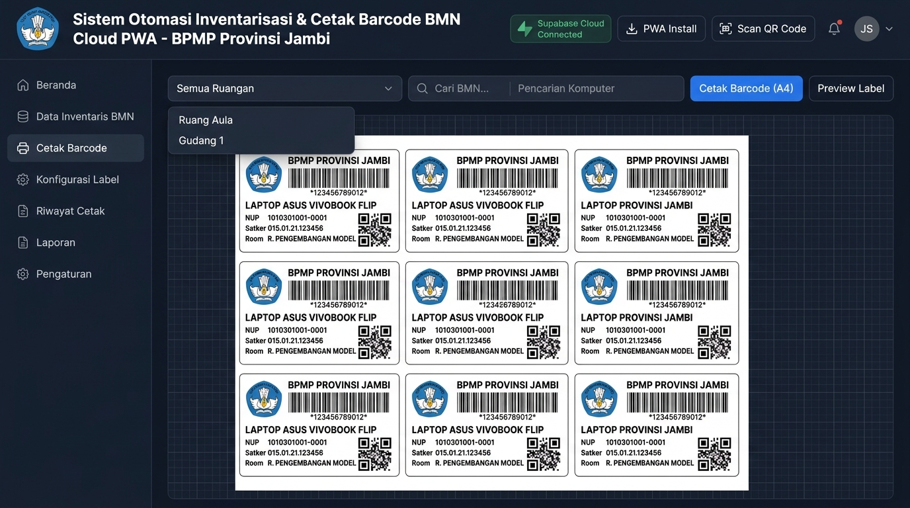
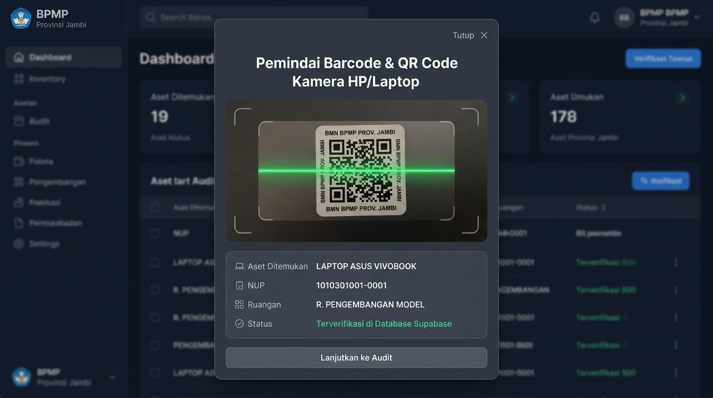

Sistem Otomasi Inventarisasi & Cetak Barcode BMN Cloud PWA
Balai Penjaminan Mutu Pendidikan (BPMP) Provinsi Jambi
Kementerian Pendidikan Dasar dan Menengah
| Parameter |
Keterangan |
| Nama Aplikasi |
Sistem Otomasi Inventarisasi & Cetak Barcode BMN Cloud PWA |
| Instansi / Unit Kerja |
Balai Penjaminan Mutu Pendidikan (BPMP) Provinsi Jambi |
| Kementerian |
Kementerian Pendidikan Dasar dan Menengah (Kemendikdasmen) |
| Pengembang |
Muhammad Indra (Full-Stack Web Developer & Data Specialist) |
| Tautan Aplikasi Live |
https://qr-barcode-bpmp-jambi.vercel.app |
| Repository GitHub |
https://github.com/Dino293/QR-Barcode |
| Waktu Pembuatan |
± 5 s.d. 7 Hari Kerja (Siklus Penuh Rancang, Bangun, Uji, Deploy) |
1. DESKRIPSI APLIKASI
Sistem Otomasi Inventarisasi & Cetak Barcode BMN Cloud PWA merupakan sistem informasi enterprise terintegrasi cloud yang dikembangkan khusus untuk memodernisasi, mempercepat, dan menatausahakan seluruh siklus pencetakan label stiker barcode fisik serta audit inventarisasi Barang Milik Negara (BMN) di lingkungan Balai Penjaminan Mutu Pendidikan (BPMP) Provinsi Jambi.
Aplikasi ini dirancang untuk mengatasi tantangan pengelolaan lebih dari 14.359 aset fisik yang tersebar di ratusan ruangan kantor, wisma, laboratorium, dan gedung BPMP Jambi. Dibangun dengan memadukan arsitektur web modern React 18, Vite, basis data cloud PostgreSQL (Supabase), sistem pemindai barcode kamera gawai (html5-qrcode), antrean pesan asinkron (RabbitMQ CloudAMQP), serta background worker Python untuk sinkronisasi data master SIMAN Kementerian Keuangan.
Aplikasi ini mengadopsi standar Progressive Web App (PWA), sehingga dapat diakses melalui browser apapun dan dapat diinstal langsung sebagai aplikasi mandiri di perangkat seluler (Android/iOS) maupun komputer kerja (Windows/macOS) dengan kapabilitas offline caching.
2. FUNGSI APLIKASI
Sistem ini menjalankan 5 (lima) fungsi operasional pokok:
- Fungsi Tata Letak & Pencetakan Label Presisi Milimeter (Zero Spillover): Mengatur dan merender stiker barcode pada kertas A4 dengan presisi ukuran milimeter murni sesuai kertas stiker resmi instansi (preset 12 stiker: 98×44mm dan preset 14 stiker: 98×38mm), menjamin label tidak terpotong margin printer.
- Fungsi Pemindai Cepat (Mobile & Desktop Barcode/QR Scanner): Mengaktifkan kamera smartphone atau laptop untuk memindai kode barcode/QR aset secara real-time di ruangan dengan respon audio beep dan auto-lookup ke database.
- Fungsi Manajemen Data Aset Cloud Terpusat: Menyimpan dan menyinkronkan 14.359 data BMN secara aman di cloud Supabase PostgreSQL yang dapat diakses oleh operator tanpa takut kehilangan data lokal.
- Fungsi Seleksi Cepat Ruangan & Filter Fleksibel: Menyaring data aset secara dinamis berdasarkan nama/kode ruangan, NUP, kode barang, maupun nama barang untuk memudahkan pencetakan bertahap per ruangan kerja.
- Fungsi Otomatisasi Antrean & Notifikasi Email: Menjalankan pemrosesan data berat (sinkronisasi SIMAN Kemenkeu) di latar belakang secara asinkron via RabbitMQ dan mengirimkan ringkasan laporan hasil pemrosesan ke email petugas melalui Mailtrap SMTP.
3. MANFAAT APLIKASI BAGI INSTANSI
- Efisiensi Waktu Pencetakan hingga 90%: Proses penyiapan dan pencetakan ribuan label stiker aset yang semula memakan waktu berhari-hari kini dapat diselesaikan dalam hitungan menit secara otomatis.
- Efisiensi Anggaran & Kertas (Zero Waste): Menghilangkan risiko stiker terbuang akibat salah cetak atau margin bergeser berkat fitur Print Range Selection dan kalibrasi milimeter.
- Nol Biaya Infrastruktur Server (Zero Server Cost): Memanfaatkan perpaduan cloud tier berkinerja tinggi (Vercel, Supabase, CloudAMQP, Mailtrap, dan GitHub Actions) tanpa membebani biaya langganan server bulanan instansi.
- Akurasi Data Fisik Tinggi: Mencegah kesalahan pengetikan nomor registrasi dan kode satker karena barcode Code 128 dan QR Code digenerate otomatis dari basis data resmi.
- Portabilitas dan Kemudahan Audit Lapangan: Petugas sensus BMN cukup membawa smartphone untuk melakukan inspeksi berkala di seluruh ruangan dan memverifikasi keberadaan barang secara instan.
4. ESTIMASI & WAKTU PEMBUATAN (DEVELOPMENT TIMELINE)
Berdasarkan riwayat repositori dan siklus pengembangan, sistem diselesaikan dalam waktu ± 5 hingga 7 hari kerja dengan rincian:
| Tahapan |
Aktivitas & Output Pekerjaan |
Durasi |
| Tahap 1: Analisis & Rancang |
Analisis alur penatausahaan BMN BPMP Jambi, pengukuran fisik presisi kertas stiker (margin atas, bawah, jarak horizontal/vertikal), dan perancangan skema data aset. |
Hari 1 |
| Tahap 2: Frontend & Print Engine |
Pembangunan antarmuka responsif (React 18 + Vite + Tailwind CSS), perancangan komponen lembar A4 fisik, dan penerapan media query cetak bebas spillover. |
Hari 2 |
| Tahap 3: PWA & Scanner Kamera |
Konfigurasi Progressive Web App dengan Workbox caching, integrasi scanner kamera (html5-qrcode), dan efek synthesizer audio beep. |
Hari 3 |
| Tahap 4: Cloud DB & Migrasi Data |
Migrasi massal 14.359 data master Excel ke Supabase PostgreSQL, pembuatan indeks relasional cepat, filter ruangan, dan spreadsheet editor web. |
Hari 4 |
| Tahap 5: Worker & Notifikasi |
Implementasi background worker RabbitMQ (CloudAMQP), integrasi email report Mailtrap SMTP, dan jadwal otomatis mingguan GitHub Actions Cron. |
Hari 5 |
| Tahap 6 - 7: Uji & Deployment |
Uji cetak printer fisik di kantor, standardisasi kode satker dan NUP, evaluasi responsivitas mobile, dan deployment production Vercel. |
Hari 6 - 7 |
5. FITUR-FITUR UTAMA SISTEM
- 1. Preset Cetak Presisi Kertas A4 (98×44mm & 98×38mm): Menjamin posisi barcode presisi pada grid kertas stiker standar kantor tanpa terpotong batas printer.
- 2. Progressive Web App (PWA) Mandiri: Dapat dipasang langsung di layar utama smartphone atau laptop dengan mode fullscreen native.
- 3. Pemindai Kamera Barcode & QR Code: Mendukung scan langsung via kamera belakang gawai atau upload gambar dari galeri, dilengkapi bunyi beep konfirmasi.
- 4. Basis Data Cloud Terpusat (Supabase PostgreSQL): Menyimpan 14.359 baris data BMN dengan pencarian cepat dan keamanan tingkat tinggi.
- 5. Filter Cepat Ruangan & Pencarian Instan: Dropdown daftar ruangan yang otomatis terisi dari dataset serta kotak pencarian multi-kriteria.
- 6. Pemilih Rentang Halaman Cetak (Print Range Scope): Memilih mencetak lembar tertentu saja (misal: lembar 1-5) guna menghemat lembaran stiker.
- 7. Editor Spreadsheet Interaktif: Memperbaiki atau menambah data barang BMN langsung pada tabel web tanpa membuka software lain.
- 8. Pengunggah Berkas Excel (.xlsx SheetJS): Mendukung pembacaan berkas Excel inventaris baru secara instan dan validasi kolom otomatis.
- 9. Antrean Pesan Asinkron (RabbitMQ): Pemrosesan tugas latar belakang multithreaded agar kinerja aplikasi web tetap ringan.
- 10. Otomatisasi Cloud Terjadwal & Laporan Email: Worker cron mingguan di cloud dan pelaporan otomatis ringkasan ke inbox email operator.
6. FOTO & SCREENSHOT APLIKASI

Gambar 1: Antarmuka Dashboard Utama & Layout Lembar Cetak A4 Stiker Barcode BMN BPMP Provinsi Jambi

Gambar 2: Modal Pemindai Kamera Barcode & QR Code untuk Audit Fisik di Ruangan
7. SPESIFIKASI TEKNIS & REFERENSI REPOSITORY GITHUB
| Komponen |
Spesifikasi & Pustaka |
| Frontend Framework |
React 18, Vite 5, Tailwind CSS |
| PWA & Caching |
Vite Plugin PWA, Workbox Service Worker |
| Barcode & QR Code Engine |
JsBarcode (Code 128), qrcode.react (SVG), html5-qrcode |
| Basis Data Cloud |
Supabase Cloud (PostgreSQL 15 dengan Relational Indexing) |
| Message Broker & Worker |
CloudAMQP (RabbitMQ 3.12), Python 3.11 (Pika, ReportLab) |
| Layanan Surel (SMTP) |
Mailtrap SMTP Gateway |
| Hosting & CI/CD |
Vercel Production, GitHub Actions CI/CD & Cron |
| Repository Resmi |
https://github.com/Dino293/QR-Barcode |
| Tautan Aplikasi Live |
https://qr-barcode-bpmp-jambi.vercel.app |